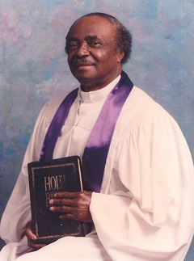
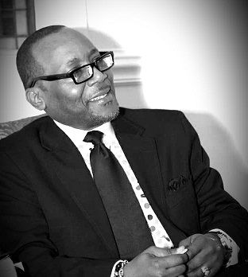

History

In 1964, the spirit of the Lord laid it upon the heart of Sister
Mattie Fowler to start a Bible class. She was later joined by
Deacon Hoke to reach out to the lives of men, women and children.
Deacon Hoke was later called into the ministry. As their Bible
class began to grow, they moved to Brides Temple Church in Stone
Mountain, GA where Mother Butler served as Pastor. They later
moved to Clarkston, Georgia and with the help of Bishop Williams,
in 1969, they established their first charter under the name of
The Church of God for All Nations. The Church moved from Clarkston
to Cherry Street and later to 552 Glendale Road Scottdale, GA.
While serving faithfully under the leadership of
Bishop Williams, Elder Hoke received the appointment of Bishop.
Under Bishop Hoke's re-establishment, a new charter was made and
the Church was named All Nations Church of God. All Nations became
incorporated and was reorganized. During the era of the 70's,
Bishop Hoke and his group of Pentecostal believers continued to
preach, teach and proclaim holiness to all that had a listening
ear.
In 1973, the Church added on to its structure and
the sanctuary was remodeled. Church services were broadcasted on
radio station WXLL to minister to the sick and shut in. Many great
men and women ministers were birthed through the ministry of All
Nations. In 1979 Bishop Lucious Jackson merged his congregation
with the All Nations body to become a more effective and powerful
Church for the Lord.

In the 80's, new ministries were adopted into the Church such as
the Glenwood Nursing Home Ministry, a weekly telecast aired on
cable television, and the Women's Council. Several upgrades were
made to the Church and a van was purchased. A special day was
designated to honor our Pastor.
In the 90's, the Church experienced significant growth. A variety
of ministries were added to aid and encourage our youth such as:
the Boys and Girls in Action, A Teen Talk (discussion groups), and
a Feed the Hungry Ministry. The George Hoke Gospel Choir was
formed and a Hammond concert organ was purchased. Several
renovations were done which included adding the Fellowship Hall,
Choir Stand and Pastor's Study.
Minister Richard
Leaphart was appointed Assistant Pastor in 1998 and Bishop Jackson
became the Assistant Pastor Emeritus. In 2001, our Founder and
Pastor, Bishop George Hoke, was called from service to rest and
went home to be with the Lord. Later that year, the mantle was
passed on with the appointment of Minister Keith D. Brooks as
Pastor.
Under the leaderships of Pastor Brooks, the
Lord continues to bless and add to the ministry. The Church name
was later changed from all Nations Church of God to All Nations
Life & Praise. Several Ministries were reconstructed. Renovations
were made, which includes the completion of the Fellowship Hall.
Sunday Night Live Services was later instituted. Several ministers
were added to the Ministerial Staff and the Church seal was
changed to expound upon our mission. There are 19 active
ministries operating within the Church to better meet the needs of
the Church Body and the community. In August 2007, All Nations
Life & Praise moved to its present location in Stockbridge, GA.
Looking forward to a promising future, plans are to expand at the
current location. It is Pastor Brooks' sincere desire that
something be said and done through this ministry that will
encourage hearts and impact lives. We are committed to the
deliverance, restoration and renewing of souls for Christ's sake!
- Add ANLP On Facebook